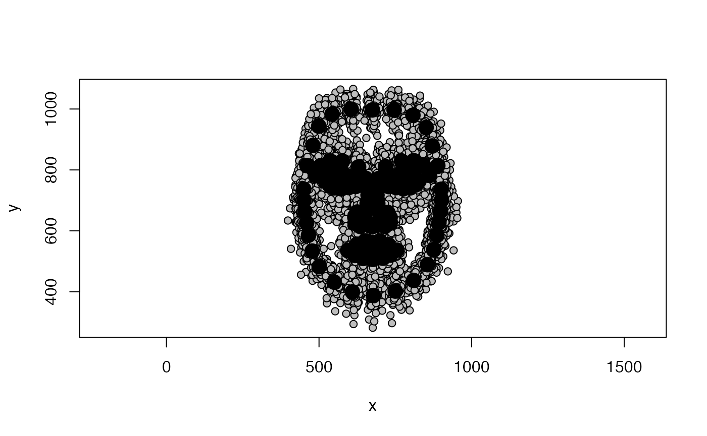
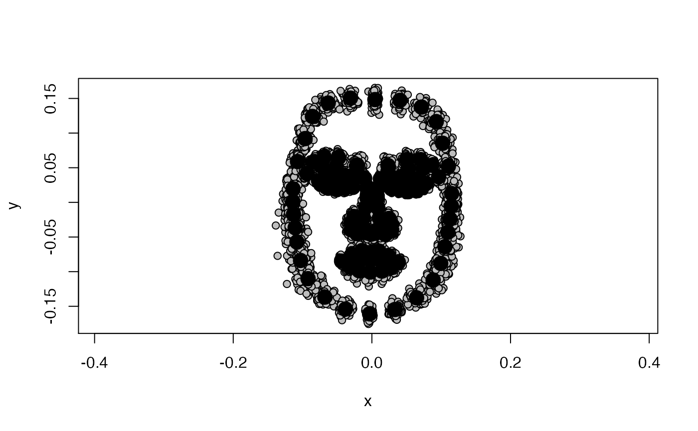

WORK IN PROGRESS
This package contains convenience functions for doing shape analyses of 2D and 3D face images in R, as well as tutorials for some common analyses (such as calculating averageness, asymmetry, sexual dimorphism and facial similarity).
The following tutorial will provide a quick start to loading 2D face data into R, Procrustes-aligning landmark templates and conducting a principal component analysis of shape using the package geomorph. It will conclude by introducing a function called basics, which will automatically create some of the most commonly used outputs.
Load data
Steps for importing your delineated landmark templates into R will vary depending on the software you used to delineate and the ‘R’ package(s) you want to use. If you have used Webmorph [REF] to delineate, you can find a tutorial on how to convert your templates into the geomorph-friendly TPS format here.
For this tutorial, we will use geomorph to explore the Face Research Lab London Set [REF]. Start by loading the TPS file.
path_to_tps <- system.file("extdata", "LondonSet.tps", package="facefuns") data <- readland.tps(path_to_tps, specID = "ID", warnmsg = FALSE)
It is always a good idea to start with plotting your data. This will show you straight away if there any obvious problems, for example, if you accidentally deleted landmarks you actually meant to keep.
plotAllSpecimens(data)

The black dots show the sample average, the gray points represent individual faces. As you can see, there is a lot of “noise” in the individual data - some of this variation will be due to differences in the size of delineated faces (e.g., some peoples’ faces might just be overall bigger, but it could also be that some people were slightly closer to the camera), their position on screen (e.g., some people’s faces might have been a bit more in the center of the captured image than others), and their rotation (e.g., some people might have been tilting their face slightly to the left or right). We are not interested in that sort of variation, but seek to eliminate it - Generalized Procrustes alignment does exactly that!
Generalized Procrustes Analysis (GPA)
We’ll use geomporph to Procrustes align our data.
data_gpa <- gpagen(data, print.progress = FALSE)
The aligned coordinates are stored in data_gpa$coords. Let’s plot one of the aligned faces.
plot(data_gpa$coords[, , 1], asp = 1)

The GPA will sometimes rotate landmark templates, but this can be easily fixed by rotating them back into the right position.
data_aligned <- rotate.coords(data_gpa$coords, type = "rotateC") plot(data_aligned[, , 1], asp = 1)
Better. Let’s have another look at the whole sample again.
plotAllSpecimens(data_aligned)
Much less messy! What we are left with after the GPA is actual shape data - data that is free of variation due to differences in size, location and orientation between individual subjects.
Shape PCA
You might want to explore which shape dimensions explain the most variance in your data. Or, you might just be keen to get out principal component scores for each face for use in subsequent analyses.
The geomorph function for conducting a shape PCA is gm.prcomp:
pca_output <- gm.prcomp(data_aligned) # summary(pca_output)
summary(data_PCA) will return a list of all principal components. That is usually not what we want. Instead, we will use the facefuns::selectPCs to decide which PCs we would like to retain for subsequent analyses.
london_pcs <- selectPCs(pca_output)
selectPCs returns a list of principal components as chosen by one of three methods. It defaults to the most conservative “broken_stick”method. Other methods are “Kaiser_Guttman” (retains PCs with eigenvalues greater than the mean eigenvalue) and “total_variance” (retains PCs explaining at least total_var variance). It returns three items: the number of selected PCs (london_pcs$n), their importance (london_pcs$selected) and the criterion that was used to choose PCs (london_pcs$method). The London Set has 8 selected PCs; the first three PCs explain 36.2%, 11.1% and 6.7% of variance, respectively.
london_pcs$selected #> SD Variance Cum Var #> PC1 0.046 0.362 0.362 #> PC2 0.026 0.111 0.474 #> PC3 0.020 0.067 0.541 #> PC4 0.018 0.058 0.599 #> PC5 0.018 0.056 0.655 #> PC6 0.017 0.050 0.705 #> PC7 0.014 0.033 0.739 #> PC8 0.013 0.027 0.766
We will save the principal component scores for any subsequent analyses we might want to do.
LondonSet_scores <- pca_output$x %>% as_tibble() %>% # tidy colnames rename_with(~gsub("Comp", "PC", .x)) %>% # re-add IDs add_column(.before = 1, id = gsub("_03.tem", "", dimnames(data)[[3]])) %>% dplyr::select(1:(london_pcs$n + 1))
What do these PCs look like? We will visualize the first three PCs by first defining a reference face, and then plotting what that reference face looks like when one PC at a time is increased/decreased. We will use the sample average as reference.
Big function
[add info explaining EVERYTHING :), change help file accordingly/keep stuff consistent; also get rid off warning message from readland.tps in basics output]
path_to_tem <- system.file("extdata", "tem", package="facefuns") remove_points <- c(45:50, 100:104, 116:125, 146:158, 159:164, 165:170, 171:174, 175:179, 184:185) x <- basics(path_to_data = path_to_tem, p = 189, remove_points = remove_points, rotate = "rotateC", plot = TRUE, pc_criterion = "broken_stick") #> #> Negative landmark coordinates have been identified and imported as such. #> If you want to treat them as NAs please set negNA = TRUE
 It is highly recommended you plot your PCs!!
Explain different options:
Use geomorph::plotRefToTarget() to * plot from geomorph::gm.prcomp output - visualizes PCs based on sample range * plot from our function’s output - visualize PCs based on (+/- 3) standard deviations * plot PCs at any SD using make2DPCs
Or use convenience functionplot2DPCs to create plot of pairs of any PC(s) at customizable level of SD